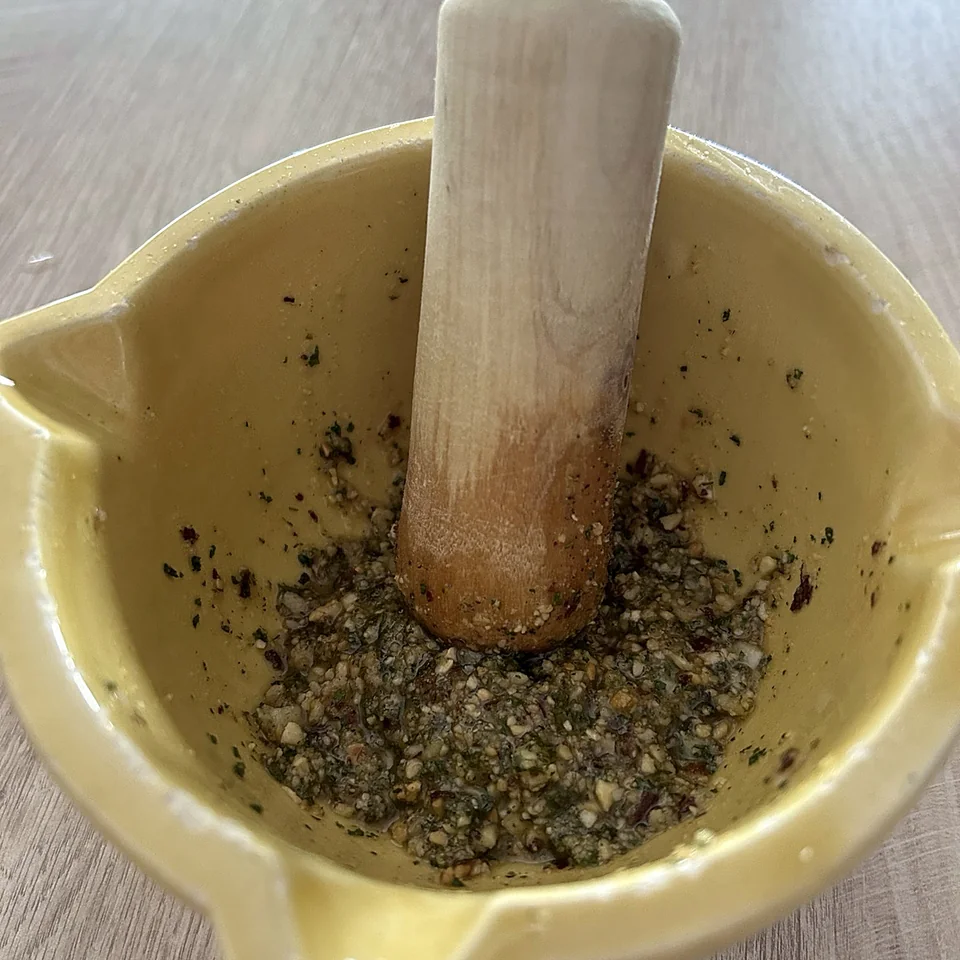

Picada catalana para arroces y guisos
Cómo hacer una picada catalana en mortero con ajo, perejil, piñones, almendras, avellanas, pan y azafrán.
- Tiempo total
- 12 min aprox.
- Preparación
- 10 min
- Cocción
- 2 min en el caldo
- Raciones
- 1 picada para una paellera
- Dificultad
- Fácil

Ingredientes
1 picada para una paellera
Marca lo que ya tienes.
Esta picada está pensada para aromatizar una paellera de arroz y se incorpora al caldo antes de añadir los granos.
Preparación
- Preparar el mortero. Pela el ajo, lava y seca el perejil y ten listos los frutos secos. Si no están tostados, tuéstalos brevemente en una sartén seca. No los quemes.
- Machacar ajo y perejil. Coloca el ajo con una pizca de sal en el mortero y májalo hasta formar una pasta. Incorpora el perejil y continúa machacando.
- Añadir frutos secos y pan. Agrega los piñones, las avellanas, las almendras y el trocito de palito de pan. Trabaja el conjunto con la mano del mortero hasta obtener una mezcla granulosa, pero bien integrada.
- Incorporar el azafrán. Añade las hebras de azafrán y sigue machacando hasta repartirlas de forma uniforme por toda la picada.
- Llevarla al arroz. Cuando el caldo del arroz esté caliente, disuelve la picada con 1–2 cucharadas de ese caldo. Viértela en la paellera antes de añadir el arroz y deja que hierva suavemente unos 2 minutos para integrar los aromas.
UN POCO DE OFICIO
Para que te salgan bien
Consejos
- Machaca los ingredientes en el mortero hasta conseguir una textura fina, pero ligeramente granulosa.
- Si los frutos secos no están tostados, tuéstalos brevemente en una sartén seca sin quemarlos.
- Dilúyela con una o dos cucharadas de caldo caliente antes de añadirla a la paellera.
Recomendaciones
No hace falta añadir muchos frutos secos: una cantidad pequeña da aroma sin espesar demasiado el caldo.
Cómo servir y presentar
Incorpora la picada al caldo caliente, deja hervir suavemente dos minutos y luego añade el arroz.
MÁS SOBRE ESTA RECETA
↑ Volver a la recetaCómo hacer picada catalana en mortero para dar sabor al arroz
La picada catalana combina ingredientes sencillos machacados a mano. En esta versión, ajo, perejil, frutos secos, pan y azafrán forman una mezcla aromática que se integra en el caldo del arroz poco antes de empezar su cocción.
Los ingredientes de esta picada
Un diente de ajo, perejil fresco, unos pocos piñones, tres almendras, tres avellanas, un trocito de pan y unas hebras de azafrán bastan para elaborar la mezcla. El equilibrio evita que los frutos secos se impongan sobre los demás ingredientes.
Por qué usar el mortero
Se empieza majando el ajo con sal, después el perejil y finalmente el pan y los frutos secos. La mezcla puede quedar ligeramente granulosa; no es necesario convertirla en una crema totalmente lisa.
Cuándo añadirla al caldo
La picada se disuelve en una o dos cucharadas de caldo y se incorpora antes del arroz. Se deja hervir dos minutos para repartir el sabor. Puedes verla aplicada en nuestro arroz seco de lagarto ibérico.
Sigue cocinando
Más recetas de salsasArroz seco de lagarto ibérico
Arroz seco con sofrito de pimiento verde, caldo casero y picada catalana, terminado con medallones de lagarto ibérico.

Pesto alla genovese
Pesto genovés con albahaca, piñones, ajo, Parmigiano, Pecorino, aceite de oliva y sal.
Opiniones sobre esta receta
Consultando valoraciones…